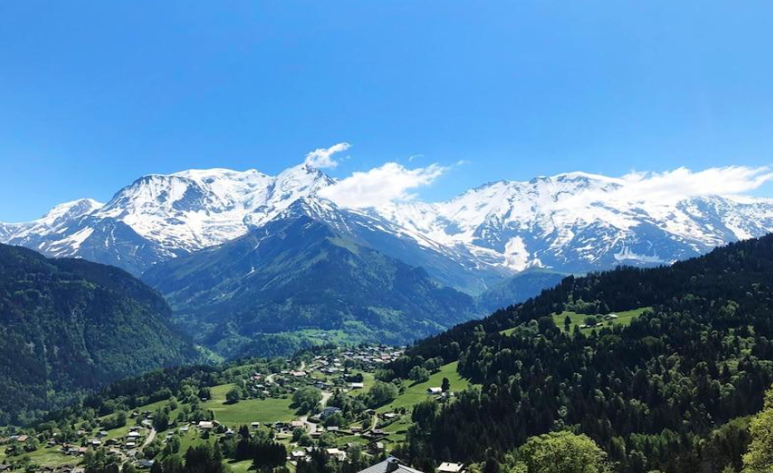
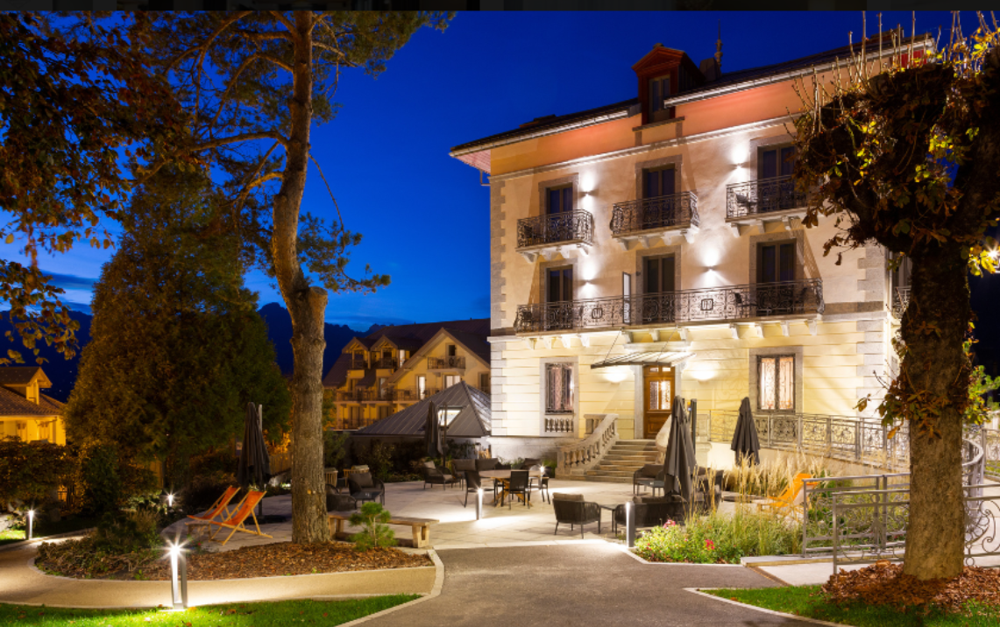
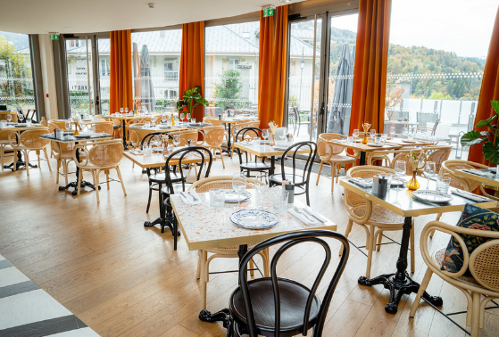
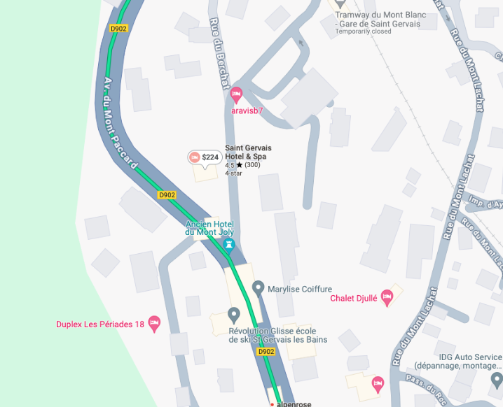

Welcome to ASIC 2025
The 25th Annual Summer Interdisciplinary Conference, held at Le Saint Gervais Hotel & Spa, 680 Rue du Mont Lachat, 74170 Saint-Gervais Mont-Blanc, in Saint-Gervais-les-Bains, France.

The conference had talks every afternoon and evening on the six consecutive days, Monday June 23 to Saturday June 28, 2025 (the last talks were held the evening of June 28).
Le Saint Gervais Hotel & Spa is a 4* modern hotel; see the hotel website. The meetings, catered breaks, and breakfasts and dinners were held in the hotel.
Saint-Gervais-les-Bains
Saint-Gervais-les-Bains is in the French Alps just to the west of Mont Blanc (not far from the foot of the Bionnassay Glacier), about 30 minutes' drive west of Chamonix, France (the site of ASIC 2022), and about an hour's drive east of Geneva, Switzerland. It offers access to the numerous activities of the general Mont Blanc region as well as activities local to the town. It is a ski resort in winter and a popular tourist destination in summer.
About the conference
ASIC is interdisciplinary, with a primary emphasis on the broad frame of cognitive science. It follows the format of previous years: days are free for leisure and discussion among participants, talks run in the late afternoon and early evening, and dinner follows. The dates are chosen to make it easy for attendees to bring family and friends.
The talks
Talks run 30 minutes, limiting the total to 48 over the six days. If more attendees wish to speak than time allows, the organizer selects speakers. A single speaking session each day (no posters) is intentionally organized to maximize the dissimilarity of each day's presentations. Topics have ranged across modeling of cognition, neuroscience and cognitive neuroscience, psychology (perception, psychophysics, attention, memory and cognition), computer science and artificial intelligence, machine learning, methodology and statistics, linguistics and psycholinguistics, and philosophy of mind — talks on any subject are welcome provided they are comprehensible and interesting to a wide scientific audience.
Daily format
The conference opened with registration and a reception with drinks and food from about 15:30–16:00 on Monday, June 23. On subsequent days there were drinks and light snacks from about 15:40–16:00, followed by a session of spoken presentations that typically ended at 20:00 (8 PM), followed by dinner.
Invitation
The conference was open to all interested parties and their family and friends — no invitation was needed to attend.
Organizer
Richard M. Shiffrin of Indiana University – Bloomington is the organizer (see the Contact tab for all contact info).
Associate organizers
- Stephan Lewandowsky, University of Bristol — Stephan.Lewandowsky@bristol.ac.uk
- Fritz Breithaupt, Indiana University — fbreitha@indiana.edu
- Jennifer Trueblood, Indiana University — jstruebl@iu.edu
- Colin Allen, University of California Santa Barbara — prof.colin.allen@gmail.com
- Franco Pestilli, University of Texas — pestilli@utexas.edu
For a listing of all past ASIC sites, see the previous ASIC sites document.
Talks & Abstracts
Authors, titles, and abstracts submitted for ASIC 2025, listed by speaker.
| Speaker | Title | Abstract | Author(s) |
|---|---|---|---|
| Michal WierzchonJagiellonian University, Centre for Brain Research | Complexity and the quest for the neural correlates of consciousness | Complexity measures have recently garnered significant attention in consciousness research, largely due to the prominence of Integrated Information Theory (IIT). They have shown success in distinguishing between different states of consciousness. However, relatively little theoretical or empirical work has focused on their capacity to differentiate between specific contents of consciousness. Moreover, IIT itself has faced growing criticism. We argue that investigating the relationship between complexity and conscious content is essential for assessing the value of information-theoretic measures. We propose an approach to operationalize conscious content and explore how complexity metrics can be interpreted independently of IIT. We examined a large cohort of healthy participants (N = 623) using a resting-state paradigm. To probe a wide range of conscious experiences, we developed and implemented six distinct conditions designed to vary in both sensory and conceptual informational content. We analyzed the EEG data using several complexity measures. Among the measures, Lempel-Ziv (LZ) complexity emerged as the most sensitive, effectively differentiating between the experimental conditions and exhibiting higher values in those designed to contain richer informational content. We also examined how these effects manifested across different regions of interest (ROIs) conducting EEG source analysis. Our findings provide further support for the view that complexity is a promising tool for identifying conscious brain activity, not only across different states but also contents of consciousness. | Michal Wierzchon, Marcin Koculak, Pawel Orlowski — Jagiellonian University, Centre for Brain Research |
| Dileep GeorgeGoogle DeepMind | Kant is wrong, Poincaré is right: Hippocampus and prefrontal cortex as latent temporal structure induction | Inducing latent structure from partially-observable sequential inputs might be the unifying principle behind the hippocampus and the prefrontal cortex. I will describe a model — Clone-structured causal graphs (CSCG) — that unifies cognitive maps, spatial representations, relational inference, transfer learning, and episodic memory under the unifying principle of latent temporal structure induction. Remarkably, under the CSCG model, there is nothing spatial about space itself; instead space is just a latent sequence, and Euclidean interpretations of place-cell representations arise out of the Euclidean structure scientists impose on the experiments. I will describe how CSCG can explain a wide variety of puzzling hippocampal phenomena, and offer a novel mechanism by which episodic memory can be unified with CSCG. | Dileep George — Google DeepMind |
| Zhong-Lin LuNYU Shanghai & NYU | mrHBM: Multi-Resolution Hierarchical Bayesian Modeling for High-Resolution Behavioral Analysis | This talk presents a pyramid-based multi-resolution Bayesian framework to estimate high-resolution latent variables from sparse behavioral data, addressing the limitations of aggregated data in capturing fine-grained dynamics across domains like education, perceptual learning, and clinical vision. It constructs a parameter pyramid with a top-layer HBM incorporating covariance for coarse trends, iteratively refining estimates at finer resolutions using a difference pyramid. Tested across four experiments with eight models on datasets including Gaussian time series, perceptual learning, perimetry, and CSF measurements, the HBMc-HBMv model consistently outperformed others, reducing errors by up to 74.1% and variability by up to 78.5% compared to a baseline. | Zhong-Lin Lu — NYU Shanghai & NYU |
| Madeleine RansomUniversity of British Columbia | To what extent can empirical methods reveal the contents of perception? | Do we represent only low-level properties such as shape, color, and motion in perceptual experience, or do we also represent high-level properties such as natural and artifactual kind properties, aesthetic, and moral properties? Recent philosophical debate has increasingly centered on the "common mechanism method," which appeals to empirical evidence that a perceptual effect common to low-level properties is also present for certain high-level properties, positing that high-level properties are therefore also represented in perceptual experience. I characterize this method and evaluate its prospects, defending it from five objections. | Madeleine Ransom — University of British Columbia |
| Martial MermillodUniversity Grenoble Alpes | The Role of Top-Down Connections in Typical Cognition, Autism, and Artificial Intelligence | Unlike standard artificial neural networks such as CNNs or Transformers, the human brain heavily relies on top-down synaptic connections in both low-level visual cognition and complex socio-emotional processing. This talk reviews theoretical models of these processes, presents experimental evidence for top-down modulation in typical individuals, explores applications to autism spectrum disorder, and extends these discoveries to AI, where hierarchical predictive coding enhances anticipation of sensory input. | Martial Mermillod — University Grenoble Alpes |
| Tim PleskacIndiana University | Modeling the dynamics of subjective probability judgments | Subjective probabilities (SPs) often violate description invariance, where different descriptions of the same event can result in different SPs. We address the static nature of extant support models by adapting Decision Field Theory to model SPs. Our proposed Judgment Field Theory (JFT) models how forecasters iteratively construct beliefs about a hypothesis, allowing a forecaster to report an SP at any moment or continue accumulating support. We tested JFT using two datasets in which basketball enthusiasts (N=125, N=364) provided probabilistic forecasts of NCAA men's basketball end-of-season rankings; the model successfully predicted both SPs and response times, and the data revealed classic context effects (attraction, similarity, compromise) that challenge many prevailing SP theories. | Tim Pleskac, Jun Fang, Apramay Mishra, James Adaryukov, Xiaohong Cai — Indiana University |
| Ven PopovUniversity of Zurich | A Tale of Two Beasts: Reflections on the first ascent of La-sum (6045m) | In October 2022, with a team of three friends, we made the first ascent of a previously unnamed 6045-meter peak in the Changla Himal region of Northwestern Nepal. The many health and logistical challenges of the month-long expedition and the first ascent made me reconsider why I climb, what adventure means to me, and what I want my life to be. | Ven Popov |
| Maciej HanczakowskiAdam Mickiewicz University | Memory processing, memory performance, and metacognition | In a typical memory experiment, a variable is manipulated and its effects on performance are assessed; a significant effect convinces the researcher that memory processes were affected, while a null effect is often taken to mean no change occurred. We discuss findings showing that context reinstatement can yield a change in memory processes that nevertheless fails to affect memory performance — a change that is picked up by metacognitive measures such as postdictions of accuracy or predictions of future performance. We conclude that interpreting null results is inherently tricky and that a proper investigation of memory processes requires multiple measures instead of performance indices alone. | Maciej Hanczakowski, Katarzyna Zawadzka — Adam Mickiewicz University |
| Maël DelemUniversity of Lyon | The Shape of Thought: EEG Topological Invariants of Working Memory Representations in Aphantasia | Aphantasia refers to the inability to form visual mental images; several studies show aphantasics perform as well as controls in visual working memory (WM) tasks, despite WM often being theorized as requiring formation and maintenance of mental images. We propose a continuous colour-recall paradigm using EEG to study neural dynamics of colour representation during perception, encoding, and WM maintenance, combining Representational Similarity Analysis with Topological Data Analysis to objectively characterize individual differences in mental imagery. | Maël Delem, Arnaud Fournel, Rémi Vaucher, Gaën Plancher — University of Lyon |
| David LandyNetflix and Indiana University | The role of Induced Sensory Experiences in Advanced Mathematics | Cognitive science has long studied the range of possible mechanisms of thought and the boundaries of human cognition — the rare, distinctive cognitive processes that let small groups of people think in ways unavailable to most others. This project focuses on cognitive mechanisms that are rare, trainable, and singularly effective in certain problem solving: direct sensory experiences of non-physical entities. Clear examples come from psychedelic drugs, but people from religious traditions and advanced mathematical practice likewise report powerful sensory experiences of non-physical objects, induced through long training and regimented practice. I report on a project studying the distinct non-physical experiences of Ph.D.-level mathematicians and the cultural practices shared with religious and spiritual communities that may inculcate them. | David Landy — Netflix and Indiana University; Eleanor Schille-Hudson — Stanford University |
| Marco ZorziUniversity of Padova | Learning to represent visual numerosity: Insights from deep generative models | I discuss the ability of large- and small-scale generative models to learn to represent visual numerosity without explicit supervision. Visual enumeration of object sets is challenging for large-scale multimodal foundation models — no model shows exact counting, and only state-of-the-art proprietary models broadly follow human numerosity estimation. Analysis of the vision-language transformer (ViLT) model reveals that inadequate performance largely stems from a "modality gap" — a misalignment between vision and language embeddings. I also discuss simulations with small-scale neural network models investigating how numerosity representation quality is modulated by the distributional properties of natural image datasets and architectural limits on image encoding capacity. | Marco Zorzi, Alberto Testolin — University of Padova |
| Richard M. ShiffrinIndiana University | Inhibition is not a cause of forgetting | Retrieval-Induced Forgetting (RIF) is reduced recall of a studied item when cued to recall a different studied item; inhibition of the retrieved trace has been proposed as a cause. Our studies included conditions with non-diagnostic picture primes that would induce retrieval of the wrong word, comparing final recall of a word that might have been inhibited due to cued testing of a different word with recall of a word studied after testing. Every test in two experiments produced the opposite of inhibition: incorrectly retrieved words are better recalled later. We model the results with well-established memory processes — competition and context change — rather than inhibition. | Anirudh Doppalapudi, Richard Shiffrin — Indiana University |
| Jay HoldenUniversity of Cincinnati | Behavioral Dynamics of Temporal Estimation Performance | Generic temporal estimation (TE) tasks require participants to "become a clock," repeatedly estimating a specific interval such as ¾ sec. This project retools the generic single-button TE protocol with two-button responding alternating between right and left fingers, enabling controlled comparisons of solo individuals versus distributed two-person teams (dyads) across manipulated information-exchange timescales. Blocking is predicted to hamper dyadic performance more than solo performance, since solo performance may draw on intrinsic physiological information exchange unavailable to dyads. The goal is to delineate the informational resources supporting fractal scaling in temporal estimation as a function of timescale. | Jay Holden, Neil Swain — University of Cincinnati |
| Johannes ZieglerAix-Marseille University and CNRS | Strict Phonics Beats Mixed Phonics: Improving Reading Acquisition and Reducing Inequality | Reading acquisition in alphabetic writing systems relies on learning grapheme-phoneme correspondences, but the optimal teaching method remains debated. We report findings from a large-scale study in France, analyzing responses from over 9,000 first-grade teachers and reading outcomes of 140,000 students. Strict phonics methods led to significantly better reading performance than mixed methods, with the greatest benefits for struggling readers and socioeconomically disadvantaged students — suggesting rigorous phonics instruction may improve literacy outcomes broadly, with implications for policy, teacher training, and social equality. | Johannes Ziegler, Paul Gioia, Jérôme Deauvieau — Aix-Marseille University / AMPIRIC / ENS, PSL |
| Christopher J. MacLellanGeorgia Institute of Technology | What is a symbolic system that we may know it, and why should we care? | Despite growing interest in "neuro-symbolic" AI, there is no clear definition of what researchers mean by "symbolic" as opposed to "neural." Under Newell and Simon's (1972) broad definition, neural systems would likely also be characterized as physical symbol systems. I present a pair of concept-formation models that intentionally blur the neural/symbolic distinction, hypothesizing that symbolic systems are sparse, localized, and bounded in both representation and processing — properties that may translate into more rapid, stable, and efficient learning. | Christopher J. MacLellan, Pat Langley, Kyle Moore, Danny Weitekamp, Jesse Roberts, Doug Fisher — Georgia Tech / GTRI-ISLE / Vanderbilt / Tennessee Tech |
| Shelley Xiuli TongThe University of Hong Kong | Abstract Over Item-Specific Information: Statistical Learning Optimizes Memory Representations | Statistical learning optimizes limited memory resources by abstracting relations among specific items, but the mechanisms underlying abstract versus item-specific representation are unclear. We developed a learning-memory paradigm with control, item-specific-encoding, and abstract-encoding groups, presented with picture–artificial-character pairs varying in abstract-category probability and item-specific information. Findings suggest statistical learning is central to abstraction, with encoding strategies and input probabilities shaping abstract versus item-specific representation through a flexible working-memory prioritization system. | Shelley Xiuli Tong, Mei Zhou — The University of Hong Kong |
| Vladimir SloutskyOhio State University | How Cognitive Immaturity Supports Cognitive Development | I argue that cognitive immaturities have benefits as well as costs, specifically benefits stemming from a tendency to explore and sample information broadly. Rather than explanations based on inhibition failure or noisy processing, I propose that broad sampling and exploration are a direct consequence of the immaturity of the Working Memory–Selective Attention System, and present evidence testing this possibility. | Vladimir Sloutsky — Ohio State University |
| Gaën PlancherUniversity of Lyon | Non-Visual Working Memory Strategies in Aphantasia: An Objective Assessment | Aphantasia — the inability to generate visual mental images — presents a paradox: aphantasics perform well on visual working memory tasks previously thought to require imagery, and are suggested to employ alternative spatial or verbal strategies without objective validation. We developed an online working-memory task memorizing items with colour (visual), orientation (spatial), and word (verbal) features to test whether aphantasics show lower colour-recall accuracy while compensating through enhanced word/orientation memory, offering an objective measure of representational strategy. | Gaën Plancher, Charline Favier, Maël Delem |
| Robert GoldstoneIndiana University | Multi-scale modularity in networks of agents that adapt to increase their relevance | Many biological, social, and economic systems evolve to exhibit modularity at multiple scales — organs within bodies, departments within universities and companies. This work models the formation of hierarchically organized modules in originally undifferentiated systems, addressing whether hierarchical modularity can emerge from vertices that simply adapt outgoing edge weights to increase their relevance within the network. Simulations show reciprocal connections, densely connected cliques, increasing modularity and community count, fine-to-coarse community formation, and increasing regularity across eigenvectors as the network evolves — pointing to broad applicability across trade, social organizations, professional networks, and neural circuits. | Robert Goldstone — Indiana University |
| John DunnUniversity of Western Australia | A test of differentiation and criterion shift accounts of the strength-based mirror effect | In recognition memory, a mirror effect occurs when "strong" items have a higher hit rate and lower false-alarm rate than "weak" items. Two competing accounts — differentiation (a relative change in memory strength) and criterion shift (a change in response criterion, not strength) — cannot be distinguished by merely comparing strong and weak conditions because of a fundamental indeterminacy. We describe this problem and investigate an indirect test based on differences in word frequency, with unexpected results. | John Dunn — University of Western Australia; Rachel Stephens — University of Adelaide; Laura Anderson — Binghamton University |
| Cleotilde GonzalezCarnegie Mellon University | Exploration-Exploitation in Sequential Decisions from Experience | Exploration-exploitation tradeoffs are commonly studied with multi-armed bandit problems; reinforcement-learning models address the tradeoff probabilistically, while sequential search models typically assume threshold policies for stopping versus continuing. We argue that exploration-exploitation decisions emerge from experience, with expected values dynamically updated through sequential choices and feedback rather than explicit rules. A decision model based on Instance-Based Learning Theory captures these tradeoffs adaptively, offering a flexible, cognitively plausible account of human decision-making. | Cleotilde Gonzalez — Carnegie Mellon University |
| David BroniatowskiGeorge Washington University | Evidence for Fuzzy-Trace Theory Over Prospect Theory in Decisions Under Risk | Prospect Theory predicts a "fourfold pattern" of risk attitudes — opposite risk seeking/avoidance for low- versus high-probability gains and losses — while Fuzzy-Trace Theory (FTT) explains choices via how categorical gists of options are encoded. Testing these competing predictions with an online sample (N=285) manipulating frame, probability, and gist-truncation, results were largely opposite to Prospect Theory's predictions and consistent with FTT: subjects experienced stronger framing effects in the gist condition and attenuated effects in the verbatim condition. | David A. Broniatowski — GWU; Valerie F. Reyna — Cornell |
| Andrew HansonIndiana University, Emeritus | The Magic of Matching | The human eye easily perceives the 3D positions of a pair of identical 3D object clouds differing only by a rigid rotation, but struggles to say more; an ingenious family of computer algorithms can find the relating rotation almost instantly. We describe a new addition to this family based on closed-form quaternion least-squares methods for cloud matching, with new insights into both the cloud-to-cloud matching task and the related orthographic- and perspective-projection cases. | Andrew Hanson — Indiana University, Emeritus |
| Stephan LewandowskyUniversity of Bristol | Gender quotas and meritocracy | The U.S. administration has taken strong action against "discriminatory" Diversity, Equity, and Inclusivity measures, ostensibly motivated by a commitment to merit alone. Gender quotas appear at first glance to run counter to merit-based hiring, but on closer inspection frequently increase team or organizational performance, since quotas broaden the pool of competent applicants and prevent mediocre individuals of a dominant group from being hired or promoted. We review this literature and present two studies showing that an empathy-based approach affirming people's basic values can shift attitudes toward gender quotas in a positive direction, even among people initially opposed. | Stephan Lewandowsky, Dawn Holford — University of Bristol |
| Klaus OberauerUniversity of Zurich | Steps to a computational model of working memory | I outline a computational model explaining benchmark findings about working memory. Items are encoded sequentially by creating temporary bindings mediated by a population of neurons; each item recruits a constant proportion of available binding neurons, creating a primacy gradient, while encoding of new events releases committed neurons, creating a recency gradient. Free time after encoding allows gradual release of the least-useful committed neurons, freeing capacity for later items — explaining both serial-position effects and the beneficial effect of free time / cognitive-load effects in complex span tasks. | Klaus Oberauer — University of Zurich |
| Angela Nelson LoweUniversity of California, San Diego | Memory Models Can Read: Combining Computational Models of Memory & Reading with SARK-R | Learning to read has been studied for centuries, but few investigations evaluate it in the context of what is known about memory. I describe SARK-R, a new extension of the SARKAE memory model (Nelson & Shiffrin, 2013) that simulates learning to read via the model's interactive connections between episodic and semantic memory, explaining orthographic-lexicon acquisition, the self-teaching hypothesis of whole-word recognition, and characteristic error patterns in developing readers. | Angela Nelson Lowe, Sabrina Y. Ha, Anne S. Yilmaz — University of California, San Diego |
| Ian KrajbichUCLA Psychology | The dynamics of open-ended decisions | In open-ended decisions, options are ill-defined and must be generated by the decision maker. Using a novel two-session experiment with 30 decision categories, we find options recalled earlier and more favorably are chosen more often and faster. A computational model in which decision makers decide while searching memory accounts for choices and response times in open-ended decisions and captures choice-share differences under different time constraints, advancing understanding of memory-based decisions. | Xiaozhi Yang — U Penn; Zhihao Zhang — U Virginia; Ming Hsu — UC Berkeley Haas; Ian Krajbich — UCLA |
| Thomas PalmeriVanderbilt University | Neurocomputational model of neurophysiology, electrophysiology, and behavior | Our neurocomputational model of target selection during visual search — Salience by Competitive and Recurrent Interactions (SCRI) — accounts for neurophysiology and, combined with our Gated Accumulator Model, saccade response times in awake behaving non-human primates. SCRI's salience representation, produced by interacting detection and identification computations, also explains the timing and amplitude of a non-human-primate analogue of the N2pc, a key electrophysiological correlate of attention, showing opposing identification and salience signals are needed to account for N2pc variation with distractor number. | Thomas Palmeri, Giwon Bahg, Gregory E. Cox, Gordon D. Logan, Jeffrey D. Schall — Vanderbilt / SUNY Albany / York University |
| Marcel BinzHelmholtz Munich | Hypothesis testing in natural language | Most theories in the behavioral sciences are still verbal. I present a framework for turning such theories into quantitative predictions that can be evaluated against each other, relying on large language models as prediction engines, discuss advantages, disadvantages and open questions, and present a case study of identifying human preferences. | Marcel Binz — Helmholtz Munich |
| Bruno BocanegraErasmus University Rotterdam | Prompting LLMs to induce novel structure | Large language models solve complex tasks that require higher-level problem-solving in humans, yet display surprising brittleness, often led astray by superficial task characteristics such as vocabulary, traceable to the distribution of token patterns in training data. We assess various LLMs on inducing novel structure in a problem-solving task that systematically varies the tokens instantiating the task, finding the full range of performance can be explained by assuming the models perform optimal Bayesian inference over prior knowledge and prompt-provided data. | Bruno Bocanegra — Erasmus University Rotterdam |
| Jonathan TullisUniversity of Arizona | The Mind Reader's Dilemma: How We Misjudge What Others Know | Accurately estimating others' knowledge is vital for navigating social environments — teachers, for example, must anticipate students' understanding — yet we show systematic biases in estimating what others know, with one's own knowledge sometimes acting as a "curse." I examine situational factors and individual differences that exacerbate or reduce these biases, modeling social metacognitive predictions within a cue-utilization framework in which predictions of others' knowledge are dynamically generated from weighed available and salient cues. | Jonathan Tullis, Yaoping Peng — University of Arizona / Hunan Normal University |
| Patricia L. FosterIndiana University, Bloomington | Bird Flu: Will it be the next pandemic? | The highly pathogenic A(H5N1) avian influenza virus, first detected in wild birds in 1997, has since spread globally via migratory birds; starting in 2022 it was detected in US domestic poultry (nearly 200 million birds lost) and in 2024 jumped to domestic cows and then to humans (70 confirmed US human cases, two deaths). I examine differences between human and bird flu viruses, what makes the bird flu virus able to infect so many species, the threat of widespread human transmission, preventative measures, treatments, and vaccine development. | Patricia L. Foster — Indiana University, Bloomington |
| Fabien MathyUniversité Côte d'Azur | Reevaluating spatialization in working memory: Implications for models of mental scanning | Spatialization in working memory — the mental organization of serial information on a horizontal axis, shaped by reading/writing habits — is usually explained by a "mental board" account grounding serial order in spatial attention, but the predicted continuous, symmetric position effects are not consistently seen empirically. Response-time differences between hands are driven largely by primacy and recency, with middle items contributing minimally, and response asymmetries challenge the assumption that both hands equally contribute — findings with implications for sixty years of mental-scanning research. | Fabien Mathy — Université Côte d'Azur |
| Ed AwhUniversity of Chicago | Content-independent indexing mediates capacity limits in visual working memory | Past neural studies of working memory (WM) focus on stimulus-specific activity, but a separate line of evidence shows neural signals tracking the number of items in WM independent of content — a common load signature across distinct visual features and even sensory modalities. We hypothesize these signals reflect spatiotemporal "pointers" binding items to their surrounding context, applying representational similarity analysis to EEG to determine pointer counts across set sizes 1–8; higher-capacity subjects show a monotonic pointer rise that levels off, while lower-capacity subjects show an initial rise followed by decline — content-independent indexing is a core component of WM-capacity individual differences. | Ed Awh, Henry Jones, Darius Suplica — University of Chicago |
| Stuart Smiley5AM Solutions | How I learned to stop worrying and love the coding | Science is hard, so why make it harder on yourself? Drawing on 25+ years as a software engineer and the research of others, this talk discusses how cognitive science and working-memory research can inform strategies for writing better software — since writing and reading code are cognitively demanding tasks central to the data collection and analysis at the heart of scientific work. | Stuart Smiley — 5AM Solutions |
| Jennifer LentzIndiana University | The contributions of left and right ears in dichotic listening | I discuss a novel application of cumulative hazard ratios based on reaction time to evaluate the relative roles of the left and right ears in dichotic listening, using data in which listeners reacted to two different digits presented to each ear under OR and AND decision rules. Young normal-hearing listeners showed a greater reliance on the right ear, with the degree of dominance differing between conditions; this approach more directly quantifies ear contributions than accuracy or mean-RT measures, with applications to assessing binaural abilities in asymmetrical hearing loss and rehabilitative strategies. | Jennifer Lentz — Indiana University |
| Ken MalmbergUSF | The von Restorff Effect in Free Recall, Recognition, and Source Memory | Distinct items encountered in a sequence are better recalled than less-distinctive items (the von Restorff or isolation effect), but there is rarely an isolation effect for recognition — inconsistent with intuition and existing memory theories. Three experiments confirm a free-recall advantage for unexpected words but no recognition advantage unless recall is tested first; three further experiments targeted at recognition and source memory, with more observations per subject and controlled test order, revealed von Restorff effects for both recognition and source memory, with implications for models of memory and attention. | Ken Malmberg — USF; Siri-Maria Kamp — Trier University |
| Bertrand ThirionInria | Brain functional alignment in the age of generative AI | Anatomical and functional inter-individual variability challenges group analysis in neuroimaging; anatomical templates mitigate morphological differences but fail to account for functional variability, blurring group-averaged activation patterns. Hyperalignment identifies fine-grained functional correspondences between subjects; functional templates eliminate the need for an arbitrary reference subject while preserving anatomical coherence. I review the strongest alignment techniques and template-estimation procedures, discuss validation through decoding experiments including generative decoding, and present preliminary results on functional alignment's impact on cross-species brain data analysis. | Bertrand Thirion — Inria |
| Michelle AwhUniversity of Pennsylvania | A mouse model of binge eating increases habitual behavior | Binge eating is characterized by episodes of uncontrollable food consumption independent of physiological need, extending habitual tendencies to other domains. We show that mice given daily restricted access to a palatable high-fat diet consume over half their daily calories within two hours, resembling binge eating, and that mice with this history continue lever-pressing for food reward even after the action-outcome contingency is weakened, suggesting a shift from goal-directed control toward habitual behavior. | Michelle Awh, Nicholas K. Smith, J. Nicholas Betley — University of Pennsylvania |
| Bruno NicenboimDept. of Cognitive Science & AI, Tilburg University | Reading as a continuous flow of information | Traditional reading models assume discrete sequential stages, leveraging parafoveal preview and partial parallelism (as in E-Z Reader and SWIFT), but struggle to incorporate higher-order comprehension processes. I propose the CoFI (Continuous Flow of Information) Reader, a dynamic system of concurrent processing implemented as a hierarchical Bayesian model, fit to self-paced reading data, in which partially completed lower-level outputs continuously feed higher-level representations while a stochastic timer gates word transitions — replicating both short latencies and systematic spillover effects that typically require parafoveal preview. | Bruno Nicenboim — Tilburg University |
| Mathieu ServantUniversité Marie et Louis Pasteur (France) | Deciding with muscles | Goal-directed behavior requires translating choices into actions through muscle contractions, yet the articulation between decision and motor systems remains poorly understood — important given psychiatric and neurological disorders (apathy, impulse-control disorders, psychomotor retardation) that appear to affect both. I show that the electrical activity of response muscles during choice tasks is strikingly consistent with evidence-accumulation decision models, and introduce the gated cascade diffusion model linking decision and motor processes, providing a good quantitative account of both behavioral and muscular data. | Mathieu Servant — Université Marie et Louis Pasteur; Nathan J. Evans — U Liverpool; Gordon D. Logan — Vanderbilt; Thibault Gajdos — Aix-Marseille |
| Christoph Huber-HuberUniversity of Trento, Italy | Active visual perception and the role of prediction across eye movements | Our eyes move three to four times per second, dividing seemingly continuous visual experience into discrete snapshots we are surprisingly unaware of — a lack of awareness suggested to arise from predictive sensory processing. I present EEG/MEG and eye-tracking coregistration studies aimed at better understanding these predictive aspects of active vision, concluding that active vision really changes how we see and considering the neural basis for the temporal structure of active gaze behavior. | Christoph Huber-Huber — University of Trento, Italy |
| Kimele PersaudRutgers University – Newark | Bayesian Models of Memory for Expectation-Congruent and Incongruent Items across Development | Bayesian models assuming recall mixes prior knowledge and noisy memory traces have explained memory in children and adults, but have overwhelmingly been applied to congruent or unrelated items, and fail to capture other developmental factors such as attention and inhibitory control. We present empirical data and modeling of prior knowledge's influence on congruent-item recall across development, then present simulations from a new model capturing both executive-function impact and expectation-incongruence on memory in children and adults. | Kimele Persaud, Carla Macias — Rutgers University – Newark |
| Fenna PoletiekLeiden University / Max Planck Institute for Psycholinguistics, Nijmegen | Mechanisms of serial recall can explain the preponderance of center-embedded syntactic structures | Hierarchical recursion defines human language; recursive loops can be center-embedded (CE) or crossed-dependent (CD), yet CE dominates Indo-European languages despite CD producing shorter dependency distances. We propose the preponderance of CE is explained by item-retention/retrieval mechanisms of serial recall combined with word-binding operations specific to language comprehension: backward retrieval (as in CE) optimizes memory performance relative to forward retrieval (as in CD), supported by numeric comparison of Retrieval and Binding Performance functions and by independent serial-recall data under sentence-processing-mimicking conditions. | Fenna Poletiek — Leiden University; Peter Hagoort — MPI for Psycholinguistics; Bruno Bocanegra — Erasmus University Rotterdam |
| Philippe ColoUniversity of Bern & ETH Zürich | Ethical Equilibrium Concepts in Game Theory | Equilibria are the central concept in game theory, and the Nash equilibrium holds a hegemonic, rarely questioned position despite often depicting normatively questionable outcomes. Since equilibrium concepts are equivalent to beliefs players hold about the game and other players' decisions — "behavioural beliefs" (bbeliefs) — I reflect on their nature and normativity, arguing we can and ought to have positive deontological influence on bbeliefs, adopting multiple bbeliefs and seeking evidence about coplayers' beliefs, a form of a priori suspension of judgement. | Philippe Colo |
| Geoff WoodmanVanderbilt University | Models of long-term memory already produce key signatures of visual working memory | The study of working memory (WM) and long-term memory diverged decades ago, and it is viewed as critical to show a capacity limit to demonstrate WM storage rather than unlimited-capacity long-term memory. We show that the precision and set-size effects WM researchers use to validate this assumption already fall out naturally from the dynamics of contextual models of long-term memory storage and retrieval, motivating re-examination of unified models of human memory. | Sean Polyn, Geoff Woodman — Vanderbilt University |
| Ghislain FournyETH Zurich | Progress report on an extension theory of quantum physics | Bell inequalities rest on two assumptions broken by nature — free choice and locality — leaving room to argue Einstein was right about the incompleteness of quantum theory if we weaken the free-choice assumption. I give a status update on progress building this non-Nashian theory of physics, including an AI-based approach for determining underlying formulas from observed correlations. | Ghislain Fourny — ETH Zurich |
| Sky Jiawen LiuCardiff University | Which violent offense is more serious? Spiking, setting fire or choking? | We examine how lay individuals assess the severity of violent offenses. Prior literature suggests rankings of offense severity are more consistent across respondent groups and scenarios than numerical seriousness ratings, but using a pairwise ordering task we found the perceived severity of violent offenses varies depending on the context in which the offense occurs. | Sky Jiawen Liu — Cardiff University |
| Zainab MohamedIU Bloomington | On the fundamental processes of recognition memory | Three long-term recognition memory studies explored basic recognition processes and current models' ability to generalize across varied list length, stimulus type, and testing format. Response probabilities were accurately predicted by the REM model (Shiffrin & Steyvers, 1997); REM's ability to generalize across so many conditions is notable given it lacks many components thought important in recognition memory, suggesting the components it does include — incomplete/error-prone storage, trace comparison, and likelihood-ratio-based old/new decisions — are the fundamental ones. | Zainab Rajab Mohamed — IU Bloomington; Constantin G. Meyer-Grant — University of Freiburg; Richard M. Shiffrin — IU Bloomington |
| Mark SteyversUniversity of California, Irvine | Communicating Uncertainty with Large Language Models | Large language models (LLMs) play a growing role in decision-making, yet their ability to convey and interpret uncertainty remains a challenge. We examine how LLMs interpret verbal uncertainty expressions versus human perception, and how discrepancies between internal confidence and explanations create a disconnect between what users think a model knows and what it actually knows — identifying a calibration gap (users overestimate accuracy) and a discrimination gap (explanations fail to help users distinguish correct from incorrect answers), both reducible by aligning LLM explanations with internal confidence. | Mark Steyvers — University of California, Irvine |
| Olgun SadikIndiana University, Intelligent Systems Engineering | Exploring Student Interactions with Generative AI in Engineering Education | There is considerable contemporary interest in generative AI tools for K–16 teaching and learning, with evidence of effective use for instructor productivity, but understanding how students use these tools is crucial given ethical-use concerns. Using discourse analysis of student conversations with a generative AI tool in a software-systems-engineering course, plus thematic analysis of student reflections, this study examines both structural and functional aspects of student–AI interaction to inform a guiding framework. | Olgun Sadik — Indiana University, Intelligent Systems Engineering |
| Nada AggadiIndiana University Bloomington | Measuring Factors Associated with Identification Thresholds in Fingerprint Analysts | Conclusions in friction-ridge comparisons require an individual threshold, yet little research addresses how personality traits and environmental factors shape identification thresholds (as opposed to value determinations or examiner-reported stress). Participants made value determinations and latent-print comparisons, then completed surveys on personality and workplace interactions; results show a significant positive correlation between Need for Cognition score and the number of identification decisions made. | Nada Aggadi, Tom Busey — Indiana University Bloomington; Meredith Coon — AVER, LLC |
Registration
Registration was made through the Indiana University Conference Bureau, with the fee covering conference-room rental, equipment, and catering for breaks and receptions.
Fee schedule (US dollars, per attendee)
Paid to the Indiana University Conference Bureau:
| Payment window | Attendee | Guest per reception |
|---|---|---|
| Prior to Jan. 1, 2025 | $350 | $25 |
| After Jan. 1, 2025 | $450 | $30 |
Attendees staying at sites other than the conference hotel could take dinner at the conference hotel for 40 euro per person per dinner, paid directly to the hotel, the same price for guests of attendees staying elsewhere.
The registration fee was refunded in the event of a cancellation.
Lodging
A block of rooms was held at Le Saint Gervais Hotel & Spa, 680 Rue du Mont Lachat, 74170 Saint-Gervais Mont-Blanc, France.

The hotel has 75 rooms of various types, well-rated dining, excellent conference facilities, and an outdoor pool, with covered secure parking (90 spaces, 10 euro/night supplement) or free parking at the nearby Mont-Blanc Tramway station. The hotel has an indoor spa available to attendees free of charge with an advance reservation. See the hotel website.
The hotel is about an hour's drive from Geneva International Airport, about two hours from Lyon Airport, and about four hours from Milan Malpensa. It is 2.2 km (7 minutes' drive) from Le Fayet SNCF train station, which shares its location with the bus station; train service from Geneva takes about an hour.
Lodging rates
Rates are inclusive except for a tourist tax of 2.6 euro per day per person, and are half-board (breakfast and dinner included). Rooms were held for ASIC until May 25, 2025; cancellation was free until 15 days prior to arrival (June 8, 2025).
| Occupancy | Room type | Rate |
|---|---|---|
| One adult | Classic double (one double bed) | 200 €/day |
| Upgrade to classic twin (extra chair-bed) | +20 €/day | |
| Two adults | Classic double or classic twin, for both | 260 €/day |
| Upgrade to Superior Room (double + single bed) | 280 €/day | |
| Upgrade to Junior Suite (two double beds) | 310 €/day | |
| Three adults | Junior Suite | 370 €/day |
| Three adults | Suite (two rooms, two doubles) | 410 €/day |
ASIC rates were available June 20–30, 2025. Reservations required a 25% deposit, refundable if cancelled up to 15 days prior to arrival.
Reservations & contact
For one- or two-attendee reservations, a lodging form was emailed. For upgrades, other room types, families, and larger groups, contact Marianne Mallier at resp.commercial@lesaintgervais.com (preferred) or call +33 (0)7 88 42 68 57.
Schedule
Each day began with a reception with refreshments and light food near or in the conference room (about 15:30 the first day, about 15:40 thereafter); talks ran roughly 16:00–20:00, followed by group dinner.
Dining & Receptions
Breakfast and dinner were included in the daily lodging price.

Buffet breakfast was available 7:00–10:30. Dinners were buffet style in the main restaurant when talks ended around 20:00, with numerous options including vegetarian choices (vegans were asked to notify the restaurant in advance). Water, sparkling water, coffee, and tea (including decaf) were available at breakfasts, dinners, and breaks; attendees paid the hotel for alcoholic drinks.
Daily receptions
Each day there was a catered reception with drinks and finger food near the conference room prior to the speaking session — about 15:30 on June 23, about 15:40 on subsequent days. The registration fee covered these receptions; guests and family members attending only receptions had a reduced registration fee.
Travel
The closest international airport is Geneva, Switzerland, about an hour's drive from Saint-Gervais-les-Bains.

Travel from Geneva is possible by car, train, and bus. Other international airports are Lyon, France (about 2 hrs 20 min by car), and Milan (a little over 4 hrs by car).
Useful travel information: tourism.saintgervais.com. For those coming without a car, local transportation options are described at tourism.saintgervais.com/transport-and-mobility. For adventure activities, many attendees found it useful to come with a car.
Activities
Saint-Gervais is scenic, with access to and views of Mont Blanc and the Aiguille du Midi, and is 30 minutes' drive from Chamonix, site of ASIC 2022, opening up nearly all of that region's activities as well.
See tourism.saintgervais.com for local summer activities: hiking, biking, climbing, mountaineering, parasailing, and all the usual ASIC outdoor adventures. The Mont Blanc Tramway, a cog-wheel train starting in Saint-Gervais, stops at Les Houches en route to Nid d'Aigle (the starting point for the normal climb of Mont Blanc), and its stops give access to hiking, parasailing, and mountain biking.
Hiking
See komoot.com and AllTrails (46 hikes listed) for the immediate area, in addition to the countless hikes around Chamonix.
Mountaineering
Numerous options surround Mont Blanc; see tourism.saintgervais.com. Mountaineering in these enormous mountains is not possible as a day trip with a return for the 16:00 session, so these adventures are best reserved for days before or after ASIC. Smaller peaks accessible from Saint-Gervais include Tête du Colonney (a long approach, 1.6 km ascent/descent, 5–6 hrs) and Mont Lachat (reachable via the Mont Blanc Tramway to Col du Mont Lachat).
Rock climbing
Beyond the possibilities near Chamonix, experienced climbers can attempt a long day climbing the backside of the Aiguille du Midi, including the famous Rebuffat route, or the equally spectacular but easier Cosmique Ridge Route (difficulty 4) — see chamonixtopo.com.
As usual, ASIC offered one or two group climbing days at reduced pricing, aimed at all climbers but particularly newcomers — novices are taught on easy routes with toprope in place, while stronger climbers enjoy more challenging routes in the same area.
Via ferrata
In addition to via ferrata near Chamonix, the Via Ferrata du Parc Thermal in the Bonnant gorges near Saint-Gervais offers two sections of iron-cable-assisted scrambling suitable for families. See savoie-mont-blanc.com.
Canyoning
Several canyoning options near Saint-Gervais — wetsuits and guides descending a mountain stream in a narrow canyon, suitable for families and requiring no experience.
Parasailing (parapente)
Tandem flights with an expert guide, typically lifting off from a hillside or cliff after a cable ride, ascending thermals and landing in a field.
Road & mountain biking
The Saint-Gervais and Chamonix areas have many biking opportunities; see komoot.com.
White-water rafting
A favorite activity for families and individuals; see tourism.saintgervais.com.
Contact
Email is preferred for all correspondence.
Conference organizer
Rich Shiffrin
Indiana University – Bloomington
shiffrin@iu.edu
Tel: 812-855-4972 · Cell: 812-219-5892
Postal address
Annual Summer Interdisciplinary Conference (ASIC 2025)
c/o Prof. Richard Shiffrin, Psychological and Brain Sciences Department
Indiana University, 1101 E. 10th St., Bloomington, IN 47405